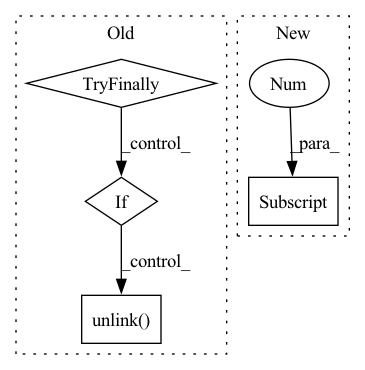

Pattern ID :11175
Before Change
if name in assets:
msg = f"{file} missing, try downloading from https://github.com/{repo}/releases/"
redundant = False // second download option
if not file.exists() or file.stat().st_size < 1E6: // check
file.unlink(missing_ok=True) // remove partial downloads
print(f"ERROR: Download failure: {msg}")
print("")
returnAfter Change
name = Path(urllib.parse.unquote(str(file))).name // decode "%2F" to "/" etc.
if str(file).startswith(("http:/", "https:/")): // download
url = str(file).replace(":/", "://") // Pathlib turns :// -> :/
name = name.split("?")[0] // parse authentication https://url.com/file.txt?auth...
safe_download(file=name, url=url, min_bytes=1E5)
return name
In pattern: SUPERPATTERN
Frequency: 3
Non-data size: 4
Instances Fragment ID: 38228481
Project Name: ultralytics/yolov5
Commit Name: f3c3d2ce5d85ba77336a9d0a87c6a446732cdda6
Time: 2021-06-08
Author: glenn.jocher@ultralytics.com
File Name: utils/google_utils.py
M Class Name: AnonimousClass
N Class Name: AnonimousClass
M Method Name: attempt_download(2)
N Method Name: attempt_download(2)
M Parent Class:
N Parent Class:
M File Name: utils/google_utils.py
N File Name: utils/google_utils.py
M Start Line: 21
M End Line: 59
N Start Line: 41
N End Line: 73
Before Change
os.close(fd)
else:
tmpfile = BytesIO()
try:
data = np.random.rand(100, channels)
if channels == 1:
data = data[:, 0]
if dtype.kind == "f":
// The range of the float type should be in [-1, 1]
data = data.astype(dtype)
else:
data = (data*128).astype(dtype)
wavfile.write(tmpfile, rate, data)
for mmap in [False, True]:
rate2, data2 = wavfile.read(tmpfile, mmap=mmap)
assert_equal(rate, rate2)
assert_(data2.dtype.byteorder in ("<", "=", "|"), msg=data2.dtype)
assert_array_equal(data, data2)
del data2
finally:
if realfile:
os.unlink( tmpfile)
def test_write_roundtrip():
for realfile in (False, True):After Change
assert_array_equal(data, data2)
// also test writing (gh-12176)
if realfile:
data2[0] = 0
else:
with pytest.raises(ValueError, match="read-only"):
data2[0] = 0 Fragment ID: 38228480
Project Name: scipy/scipy
Commit Name: dc0bb8bcc7da028f601bb52a8ebac45b5c502250
Time: 2020-07-06
Author: larson.eric.d@gmail.com
File Name: scipy/io/tests/test_wavfile.py
M Class Name: AnonimousClass
N Class Name: AnonimousClass
M Method Name: _check_roundtrip(5)
N Method Name: _check_roundtrip(4)
M Parent Class:
N Parent Class:
M File Name: scipy/io/tests/test_wavfile.py
N File Name: scipy/io/tests/test_wavfile.py
M Start Line: 150
M End Line: 178
N Start Line: 147
N End Line: 176
Before Change
if name in assets:
msg = f"{file} missing, try downloading from https://github.com/{repo}/releases/"
redundant = False // second download option
if not file.exists() or file.stat().st_size < 1E6: // check
file.unlink(missing_ok=True) // remove partial downloads
print(f"ERROR: Download failure: {msg}")
print("")
returnAfter Change
name = Path(urllib.parse.unquote(str(file))).name // decode "%2F" to "/" etc.
if str(file).startswith(("http:/", "https:/")): // download
url = str(file).replace(":/", "://") // Pathlib turns :// -> :/
name = name.split("?")[0] // parse authentication https://url.com/file.txt?auth...
safe_download(file=name, url=url, min_bytes=1E5)
return name
Fragment ID: 38228478
Project Name: fcakyon/yolov5-pip
Commit Name: 5afe85ae36145f9f3b511b2918b51566b7296f5d
Time: 2021-06-22
Author: 34196005+fcakyon@users.noreply.github.com
File Name: yolov5/utils/google_utils.py
M Class Name: AnonimousClass
N Class Name: AnonimousClass
M Method Name: attempt_download(2)
N Method Name: attempt_download(2)
M Parent Class:
N Parent Class:
M File Name: yolov5/utils/google_utils.py
N File Name: yolov5/utils/google_utils.py
M Start Line: 21
M End Line: 59
N Start Line: 41
N End Line: 73